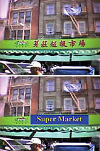

|
Ýcat
ettiði "InfoScope" adlý cihaz, TIME dergisi tarafýndan
2002'nin en ilginç buluþlarý arasýna dahil edilen Ýsmail
Haritaoðlu adlý Türk araþtýrmacý, internet sitelerinin
dikkatini üzerine çekti. Siteler, yýlýn buluþlarý arasýnda
Haritaoðlu'nun icadýna da yer verdiler.
IBM firmasýnda araþtýrmacý olarak görev yapan Haritaoðlu,
2 yýl önce Tokyo'daki bir tren istasyonunda, Japonca bilmediði
için çaresiz kaldý. Bu olaydan kendine ders çýkaran Haritaoðlu,
geliþtirdiði cihazla yabancý ülkelerde zorluk çeken kiþilerin
sorunlarýna çözüm getirdi. Haritaoðlu'nun "InfoScope" adýný
verdiði cihaz, herhangi bir yabancý iþaretin resmini çekiyor
ve bunu telsiz internet sistemi aracýlýðýyla baþka bir ülkedeki
bilgisayara naklediyor. Burada iþaretin ne anlama geldiði
kiþinin anladýðý dile çevrilerek, 15 saniye içinde kendisine
iletiliyor.
Haritaoðlu'nun halen küresel pozisyon sistemiyle (GPS) donatýlmýþ
cep telefonlarýnýn yararlanacaðý bir sistem üzerinde çalýþtýðý
da TIME dergisinin haberinde yer aldý.
Aþaðýda, Bu konuda daha fazla bilgi
alabileceðiniz sayfalara linkler ve haberlerin orijinal metinleri
veriþmiþtir.
DÝÐER
ÝLGÝNÇ BULUÞLAR:
TIME'ýn yeni yýl sayýsýnda yer alan diðer ilginç buluþlardan
bazýlarý da þunlar:
-Çevre dostu otomobil: Çevreyi kirletmeyen benzinsiz
otomobil Porsche'nin en geliþmiþ modellerine eþdeðer bir performansa
sahip. Çevrecilerin fantezisi olarak nitelendirilebilecek
otomobilin ilk modelleri, Eylül ayýnda Paris oto sergisinde
teþhir edildi. Araçlarýn ilk örneklerinin ise 2010 yýlýnda
General Motors tarafýndan piyasaya sürülmesi bekleniyor. Toyota,
Honda ve Ford da bu otomobillerden üreteceklerini açýkladýlar.
-Ýcopod adlý geçici barýnaklar: Sanford Ponder tarafýndan
icat edilen bu barýnaklar, lamine kartondan yapýlýyor ve altýna
sadece bir zemin döþeniyor. Rüzgara dayanýklý, su geçirmeyen,
çok iyi tecrit edilmiþ dört köþe çadýr biçimindeki barýnaklarý
kurmak için özel yetenek ya da alet gerekmiyor. Barýnaklarýn
savaþ ve doðal afetlerde çok iþe yarayacaðý kaydediliyor.
Barýnaklarýn tanesi 745 dolardan satýlýyor.
-Bebeðinin ultrasonunu kendin çek: Novint Technologies
adlý firma tarafýndan geliþtirilen bir cihaz sayesinde isteyenler,
ana karnýnda bulunan bebeklerinin ultrasonunu evde kendileri
çekebilecek. 3 boyutlu resim veren sanal ultrasonun fiyatý
250-350 dolar arasýnda.
-Braille alfabesi eldiveni: Ryan Patterson adlý 18
yaþýndaki bir lise öðrencisi tarafýndan icat edilen bu eldivenler,
saðýr ve dilsizlerin kullandýklarý iþaret dilini yazýlý metin
haline dönüþtürüyor.
InfoScope:
http://www.technologyreview.com/articles/print_version/prototype41201.asp
One of the challenges of traveling abroad is trying to make
sense of signs and restaurant menus written in a foreign language.
A translation device being developed at IBM's
Almaden Research Center in San Jose, CA, could ease the
alienation. Called InfoScope, the unit consists of a handheld
device equipped with a digital camera that takes snapshots
of the text the user is interested in. The image is sent wirelessly,
via the user's cell phone, to a remote server. The server
identifies what in the image is text, and then translates
the words into a selected language. Within 15 seconds, the
translation is relayed back to the handheld and superimposed
on the photographed scene (photo). IBM researcher Ismail
Haritaoglu, InfoScope's chief architect, says the device
could be on the market in two to five years.
http://www.pcmag.com/print_article/0,3048,a=29492,00.asp
Devices: InfoScope Translator
September 3, 2002
By Michael J. Miller
You're
on vacation, dining at a swank restaurant in Greece, but the
menu is Greek to you. In Beijing, you're even more clueless.
World travel just isn't as meaningful as it can be when you
don't understand the native languages. But advances in global
positioning systems (GPSs), wireless communications, digital
cameras, and handheld devices may one day solve this travelers'
dilemma.
Promising
work toward this goal is taking place at the IBM Almaden Research
Center, where Ismail Haritaoglu, a research staff member,
and Daniel M. Russell, senior manager of the User Lab, have
developed the IBM InfoScope. You won't want to leave home
without it. The InfoScope does something no other handheld
can do: Point it at a sign and it translates the words into
your own language.
The
prototype, which the researchers describe as an information
augmentation system, uses a Casiopedia Pocket PC with an attached
Casio digital camera. You capture an image-a sign for a restaurant,
for instance-on the screen and then select a bounding box
to indicate where the text is. Since the Pocket PC doesn't
have enough power to process the image, a wireless connection
sends the image to a server where software converts the image
into black and white. Optical character recognition (OCR)
software, developed in conjunction with IBM China, is run
on the text, and translation software converts the text into
your language. The prototype can translate four languages
into English: Chinese, French, German, and Italian (not yet
Greek). Eventually, the InfoScope may even translate menus.
Two to five years from being commercialized, the InfoScope
isn't perfect yet. The researchers are investigating replacing
the GSM modem with a faster 802.11 wireless connection or
a 3G modem. The goal is for future prototypes to translate
signs in less than 5 seconds. They're also working on support
for Japanese translation and on adapting the technology to
run on phones with built-in cameras, such as the Nokia 7650
and the Sony Ericsson P800.
In
its current state, the InfoScope works only for short translations
and doesn't understand context-limitations that the IBM team
is working to overcome. It is also developing an application
called Information Augmentation in the City, which uses the
InfoScope to collect information from a GPS and a wireless
modem. The goal is to point the handheld at a tourist site
and receive all sorts of information, from its history to
its hours of operation and admission prices.
Russell
says that the real advantage of the system is its ability
to translate words spelled in non-Roman characters. Although
dictionaries are useful for translating languages that use
the Roman alphabet, you're stuck if you don't recognize a
language's character set.
No
matter how accurate the software is, however, translation
will always be an art, not a science. Case in point: Russell
describes taking his InfoScope to San Francisco's Chinatown
for a test run. It translated the Bank of America sign in
Chinese as "Great Wall of Money Bin." Russell says,
"It makes you appreciate the complexity of language."
|